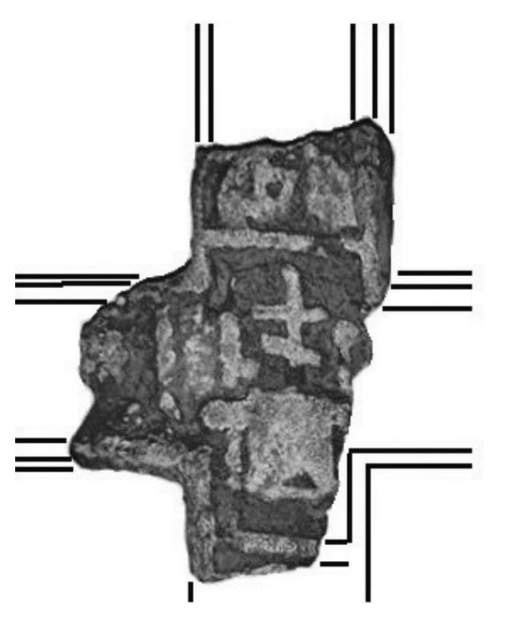
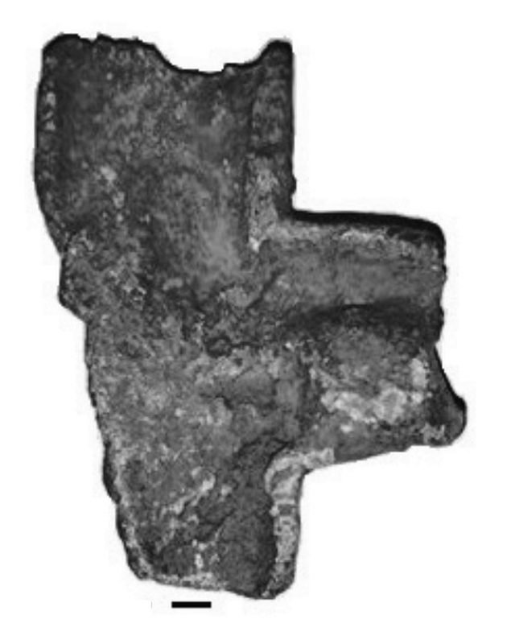

Catalog › CE-0218 · JOS2022-3
Fragment de cruce-relicvar cu Tronul Hetimasiei, sat Buhonca, com. Doljești
în jurul anului 1200 (1200–1200) · sat Buhonca, com. Doljești (lângă pârâul Albuia), jud. Neamț, România · Complexul Muzeal Național Neamț, Piatra Neamț, inv. 29.267
single valve of a reliquary cross, bronz; în jurul anului 1200 (1200–1200); found at sat Buhonca, com. Doljești (lângă pârâul Albuia), jud. Neamț, România; kept at Complexul Muzeal Național Neamț, Piatra Neamț.




Identificare
- Categorie
- Valvă izolată
- Material
- Bronz
- Tehnică
- Turnare în relief
- Stare
- Fragmentară
- Dimensiuni
- Î 53 × L 38 mm
Iconografie
- Descriere avers
- Fragment cu trei brațe. În câmpul principal, o cruce slavă în relief așezată pe o cămașă cu brațele deschise (compoziția „Tronul Hetimasiei”), flancată de uneltele patimilor: sulița și trestia cu bureții cu oțet, în vârf. Capetele rupte ale extremităților păstrează busturi de sfinți în relief; deasupra, mâna care binecuvântează a sfântului din extremitatea de sus.
- Descriere revers
- Pe spate, lăcașul specific pentru păstrarea relicvelor. Deformat și rupt din vechime, posibil sub efectul unui incendiu.
Datare și atribuire
- Datare
- în jurul anului 1200 (1200–1200)
- Centru
- Necunoscut
- Tipologie
- Peskova–Korzuhina 2003, tab. 143/VIII 3.1/6 (analogie)
Descoperire
- Localitate
- sat Buhonca, com. Doljești (lângă pârâul Albuia)
- Regiune
- jud. Neamț
- Țară
- România
- Context
- Descoperire izolată
- Anul
- 2020
- Coordonate
- 47.0261° N, 26.9798° E
- Precizia locului
- Coordonate exacte
Păstrare și referințe
- Colecție
- Complexul Muzeal Național Neamț, Piatra Neamț
- Nr. inventar
- 29.267
- Bibliografie
- V. Josanu, Encolpioane inedite descoperite recent în județul Neamț, în Evul Mediu neterminat / A befejezetlen középkor / The Unfinished Middle Ages. Omagiu adus profesorului Adrian Andrei Rusu la împlinirea vârstei de 70 de ani, ed. G.-D. Iegar, P. L. Szűcs, G. Rusu, F. Vasilescu, Cluj-Napoca, Editura Mega, 2022, p. 707–723 [Josanu 2022], p. 711–712, reprodusă la Fig. 9–11 (planșele, p. 722). Bibliografie citată în sursă: Peskova–Korzuhina 2003, 194; Pucko 1986, 170; Berežnaja 2003, 455; Kondakov 1905, 78; Fedorov 2000, 14.
- Figura
- Fig. 9–10
- Planșe
- Josanu 2022, p. 722
- Analogii
- Exemplarul de la Krylos (Halici), reg. Ivano-Frankovsk, Ucraina, dispărut (Peskova–Korzuhina 2003, 216); Knjaža Gora, Pekari, r. Kanev, reg. Čerkasî (7,4 × 5,6 × 1,4 cm).
- Observații
- Datare după Josanu: după modelele iconografice ar putea fi din a doua jumătate a sec. XI, dar materialul comparativ înclină pentru circa 1200; tipul ar aparține unui stil arhaizant de la începutul sec. XIII. Dimensiuni maxime 5,3 × 3,8 cm. Descoperit în 8–9 august 2020, pe un teren agricol din satul Buhonca; predat la Direcția Județeană pentru Cultură Neamț, de Tudor Monoran. Reversul pierdut se reconstituie, după analogie, cu Maica Domnului orantă între simbolurile celor patru evangheliști. Tip fără corespondent apropiat în producția veche rusească sau bizantină, după autor. Coordonate: citite din marcajul de pe harta Fig. 11 a sursei (47°01'33,8"N 26°58'47,3"E).
Citare: Corpus Encolpiorum, CE-0218, Fragment de cruce-relicvar cu Tronul Hetimasiei, sat Buhonca, com. Doljești, --root/piese/JOS2022-3/ (accesat 2026-10-20).